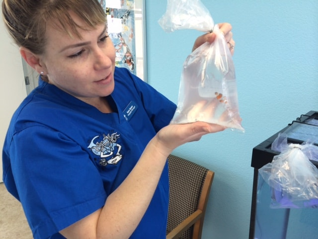

Lý do thành lập
Koi Care Center được thành lập với mục tiêu cung cấp dịch vụ chăm sóc và điều trị chuyên nghiệp cho cá Koi. Chúng tôi hiểu rằng cá Koi không chỉ là một loài cá cảnh mà còn là biểu tượng của sự may mắn và thịnh vượng trong văn hóa Nhật Bản. Vì vậy, việc chăm sóc và bảo vệ sức khỏe cho cá Koi là rất quan trọng.
Người sáng lập

Dr. Nguyễn Văn A
Dr. Nguyễn Văn A là người sáng lập Koi Care Center. Với hơn 20 năm kinh nghiệm trong lĩnh vực thú y và đặc biệt là chăm sóc cá Koi, ông đã xây dựng nên một trung tâm chăm sóc cá Koi hàng đầu tại Việt Nam.
Thành viên
Dr. Trần Thị B
Chuyên gia về bệnh lý cá Koi với hơn 15 năm kinh nghiệm.
Dr. Lê Văn C
Chuyên gia về dinh dưỡng và chăm sóc cá Koi.
Dr. Phạm Thị D
Chuyên gia về hệ thống lọc nước và môi trường sống cho cá Koi.